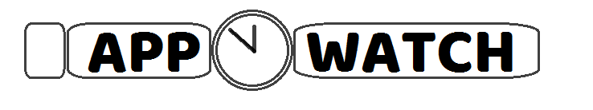

O Projekcie
Strona, na którą właśnie patrzysz, powstała w 4 dni w ramach warsztatu końcowego kursu CodersLab "Zostań programistą Front-end", w którym miałem okazje ucestniczyć oraz ostatecznie zaliczyć pozytywnie:) Wersja, na którą właśnie patrzysz, to nie tylko początek mojej przygody z programowaniem, ale także start projektu, który mam zamiar rozwijać.
Jeśli chodzi o stronę developerską projektu, to zależało mi przede wszystkim na tym, by strona była responsywna, lekka, czytelna i rozwojowa. Mam nadzieję, że udało mi się to osiągnąć, ale przede mną jeszcze sporo pracy, wiem. W projekcie, już niebawem zajdą duże zmiany. W pierwszej kolejności uzupełnie artykuły o testy i materiały, a to czasochłonne zajęcie. Docelowo chce do każdej aplikacji zrobić swoją osobistą video recenzję i dokładnie je przetestować. Wiele jeszcze do zrobienia w kwestiach społecznościowych pozostało. No i nie ma ciągle logotypu, choć jako mistrz Painta popełniłem podczas przerwy w szkoleniu takie dzieło: 
Co teraz?
Dopiero co rozkręcam się z programowaniem. W chwili obecnej JavaScript na appwatch.pl odpowiada jedynie za to, że wysuwa się menu na smartfonie :) Na tej stronie będę się uczył i utrwalał swoje umiejętności programistyczne oraz jednocześnie postaram się stworzyć wartościowe miejsce w sieci dla osób szukających ciekawych aplikacji na swoje zegarki. Jeśli masz jakieś uwagi dotyczące projektu zapraszam do kontaktu.
Dzięki za odwiedziny.
Rafał Musiał